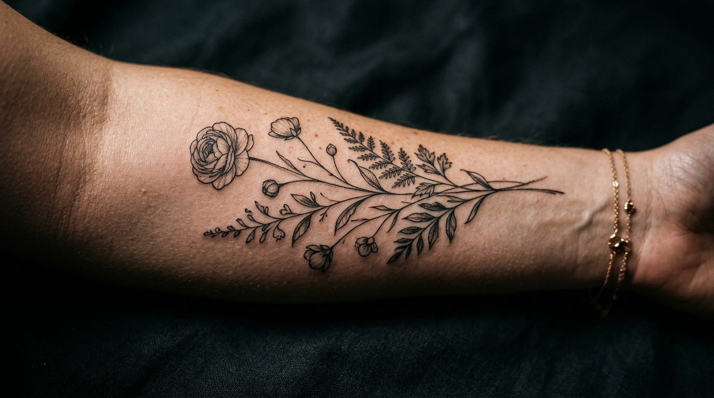
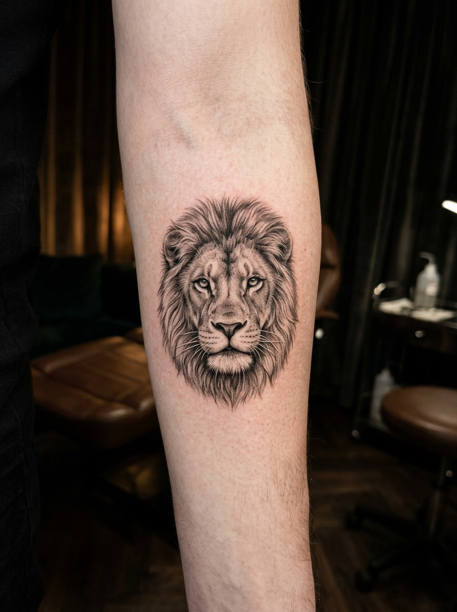
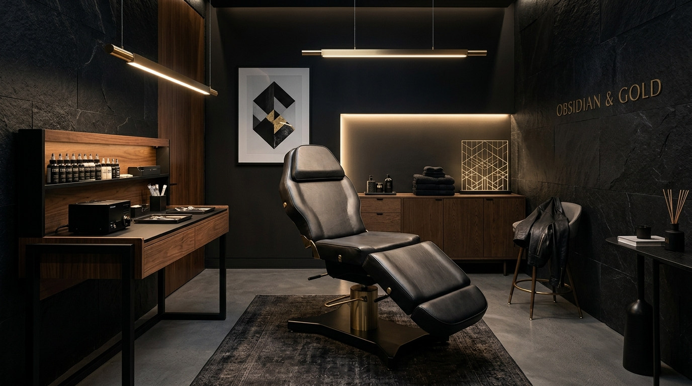

Pedro combina o controle cirúrgico de profundidade no Fineline com o sombreamento preciso do Microrealismo para eternizar sua história na pele, sem estourar o traço.
Projetar minha tatuagem com Pedro
Entenda como Pedro une biologia da cicatrização e precisão técnica para garantir que seu desenho dure para sempre.
Cada traço é executado com controle estrito de pressão e inclinação da agulha para impedir que a tinta migre para as camadas profundas.

Sombreamentos graduais e contrastes calculados que respeitam o tamanho da sua pele, mantendo a nitidez por décadas.
Problema: O excesso de profundidade da agulha faz a tinta espalhar sob a derme, criando borrões grossos.
Pedro: Calibração cirúrgica do equipamento e controle milimétrico para manter o traço delicado permanentemente.
Problema: Retratos realistas que viram manchas esauras ilegíveis pela saturação excessiva em espaços pequenos.
Pedro: Distribuição precisa de espaços negativos para que a pele respire e a tinta se assente mantendo o contraste.
Problema: Ser tratado apenas como um número em estúdios comerciais de massa, sem atenção direta do artista.
Pedro: Criação totalmente colaborativa e atendimento exclusivo e calmo do primeiro rascunho à cicatrização.
"O Pedro me explicou toda a técnica que usaria, a profundidade exata da agulha. Faz dois anos que fiz e o traço continua fino, nítido e delicado."
— Mariana Costa, São Paulo
"Pedro foi super sincero sobre o tamanho ideal para os detalhes não se perderem. Olho para o meu braço e vejo a foto perfeitamente nítida."
— Ricardo Medeiros, Sorocaba

A tatuagem não termina quando a máquina desliga. Pedro monitora ativamente sua cicatrização:
Envio do guia digital de cuidados imediatos e acompanhamento direto via WhatsApp.
Check-in ativo para verificar o processo de descamação e hidratação da derme.
Análise final por foto para avaliar a necessidade de retoques gratuitos.
Vagas limitadas. Envie suas ideias para iniciar a cocriação direta com o Pedro.